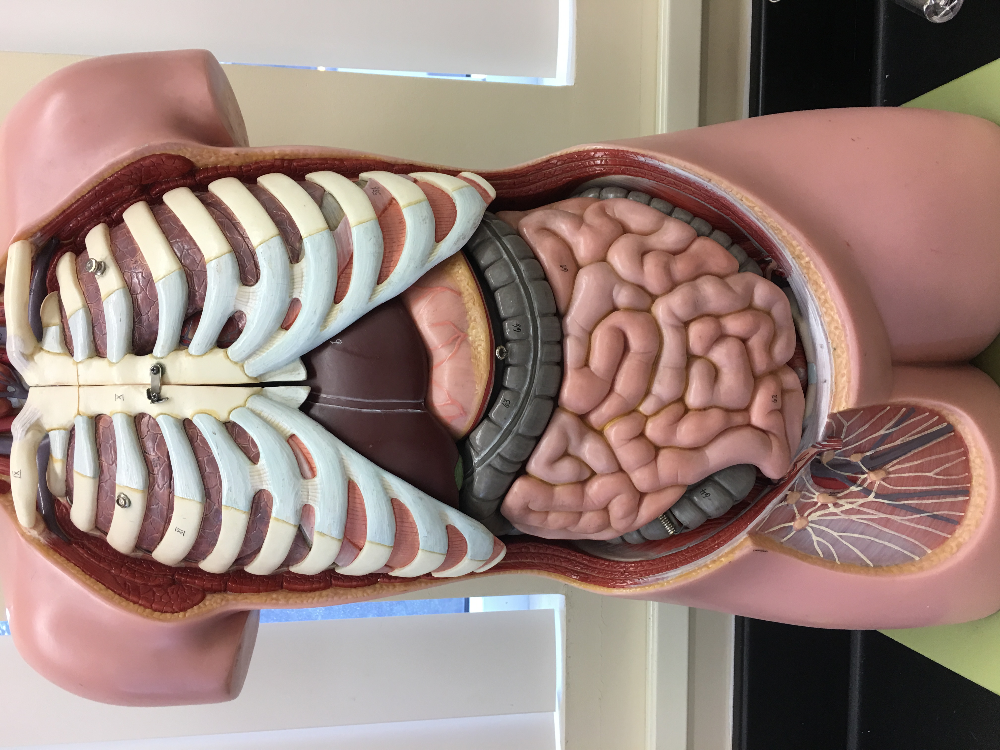
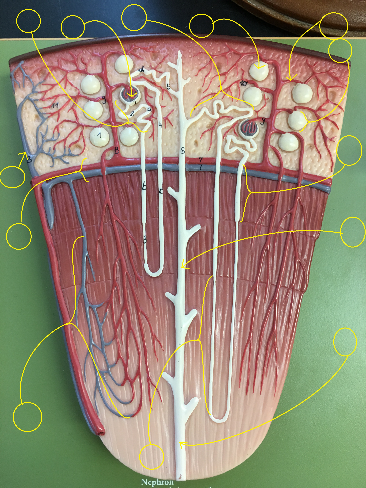
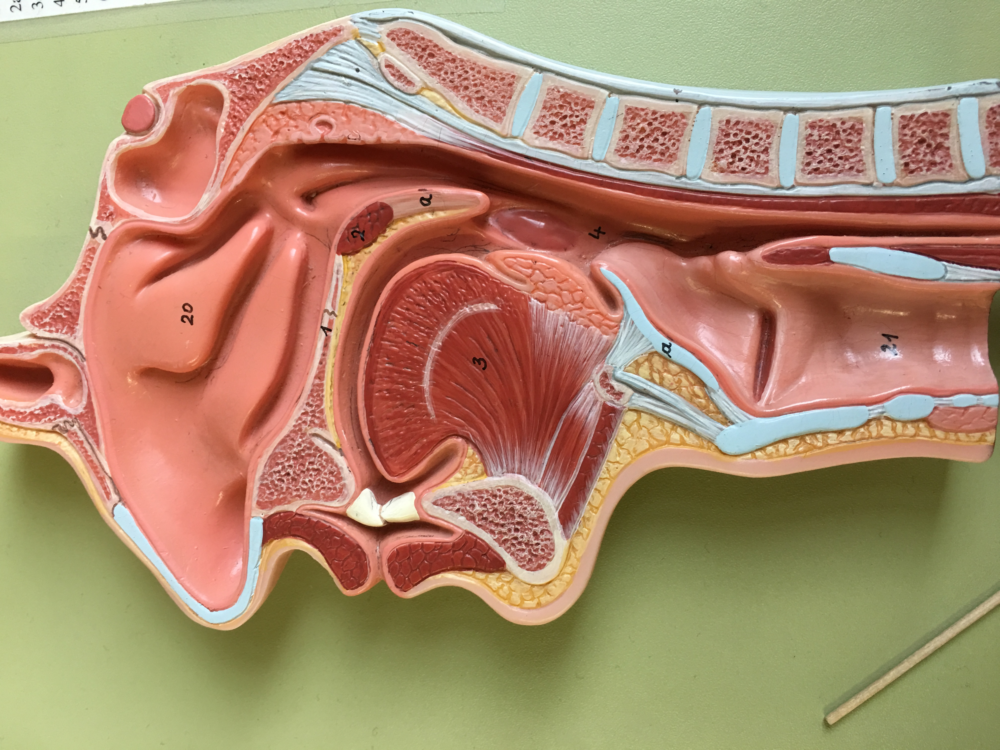
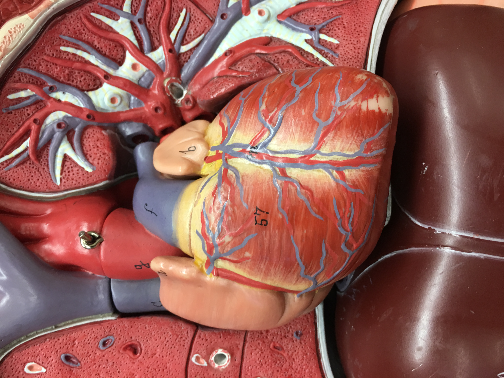
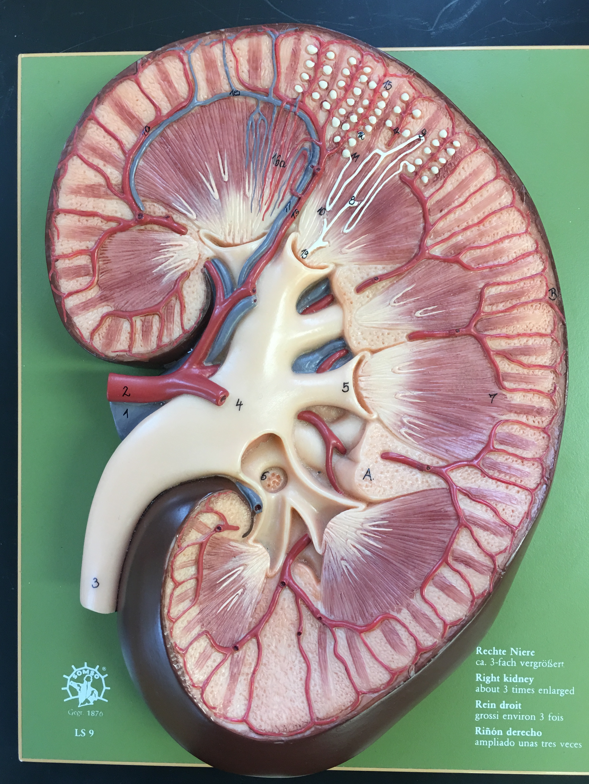
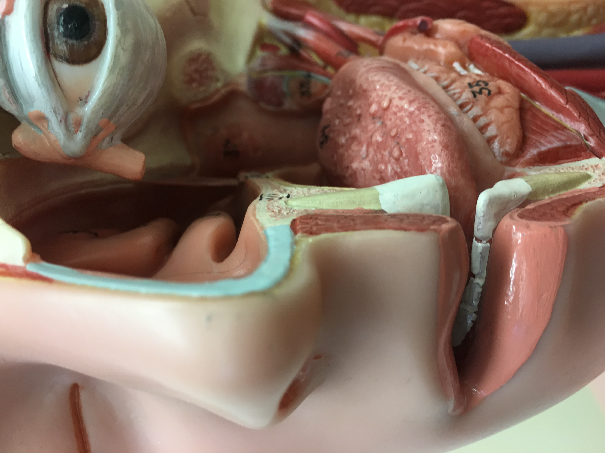

I am a competent professional with a proven track record,
and I bring a wide palatte of skills and proficiences to
the table.
With my experience engaging in high tempo military
intelligence operations, I aim to bring not only
a sense of purpose and problem-solving to your organization's
needs, but also the culture that keeps professionals
working hard day-in and day-out towards solving the day's pressing challenges
Constructed individualized training plans for 36 trainees, conducted 423
hours of training in several key positions, and manipulated several databases
and working documents to monitor, evaluate, and adjust training
Planned 313 intelligence collection missions, coordinated with training,
operations, and external departments to deconflict potential manning issues;
manipulated several databases and working documents to track activity
JUN 2015 - OCT 2015 | Supervisor: Technical Sergeant Ascher
Selected to test, identify potential issues, and ultimately validate $280M
intelligence collection platform for the use of 1.1k operators; developed new
capability in alignment with Air Force Headquarters Senior Advisor vision
Jim Fisher's Farm (Newberg)
- 2017 -
Loaded hay for sale and storage, stacked and stored hay in barn and loft, also stacked hay for transport on flat-bed
ensuring safe transportation, and operated 1/2 ton pick-up truck to deliver and store hay purchases. Also maintained
property to include spraying weeds, installing fencing, and feeding angus beef cattle
George Fox University
- 2018 -
Teacher's Assistant - Human Anatomy & Physiology II
Assisted instructor during weekly laboratory sessions, and conducted
weekday/weekend study sessions while promoting group learning activities
- 2021 -
Carpenter's Assistant - Maintenance & Repair
Conducted general labor in minor demolition, and construction, and general
building maintenance; operated university vehicles to carry out duties as
expected in accordance to daily requirements
Ace Hardware - PDX/Newberg, OR
- 2018 : 2021 -
Sales Associate - Cashier and Special Orders
Conducted sales for diverse clientele, maintained ~20K item inventory, and
fulfilled a variety of custom orders as required to satisfy customer needss
projects
Developmental Biolology - George Fox Univ.
BIOL 310: Prof Dwight Kimberly, Spring 2017
I carefully, and methodically (over a dozen+ hours) photographed several
entire series of specimen slides to give myself
and my classmates a better idea of how an
organism's anatomy can develop from tail to
nose, and vice-versa.
this project best illustrations the product of an open eye to creative ways to solve persistant problems, no matter how tedious the process may invariably be
see two examples below...
Human Anatomy & Physiology - George Fox Univ.
I prepared several dozen stations for students enrolled in the BIOL 222 (Human Anatomy and Physiology II) for an extensive practice practicum to include histology






articles
The Crescent; George Fox University newspaper article
THe American Revolutionary War: A Just War, or just another war?